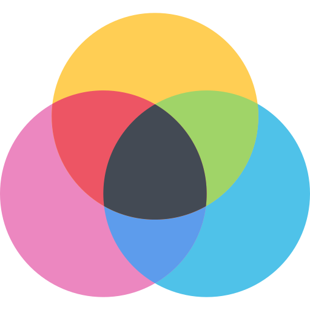

Design & Code
Kim jestem?
Człowiekiem ciekawym świata. Programistą, który nie zaśnie, dopóki nie dowie się, jak działa dany program albo dlaczego ta gra komputerowa jest taka, jaka jest.
Kim nie jestem?
Typowym nastolatkiem spędzającym całe życie w serwisach społecznościowych. Życie w realu jest zbyt pasjonujące, żeby tracić cenny czas na "wirtual".
Co robię?
Wszystko to, czym zajmuje się dyplomowany technik-informatyk, który od dziecka czuł, że jego przeznaczeniem jest programowanie:
- tworzę strony internetowe, programy, grafiki,
- udzielam się na forach internetowych związanych z programowaniem,
- pomagam innym, rozwiązując ich programistyczne problemy,
- chłonę literaturę fachową, żeby być na bieżąco z najnowszymi trendami.
Co mnie pasjonuje?
Sprawianie, by tworzony przeze mnie program działał bezbłędnie. Brzmi prosto, ale każdy, kto zna ten zawód wie, ile przeszkód trzeba nieraz pokonać, by dotrzeć do upragnionego celu.
kontakt@wojciechsmolarek.pl
+48 697 225 901